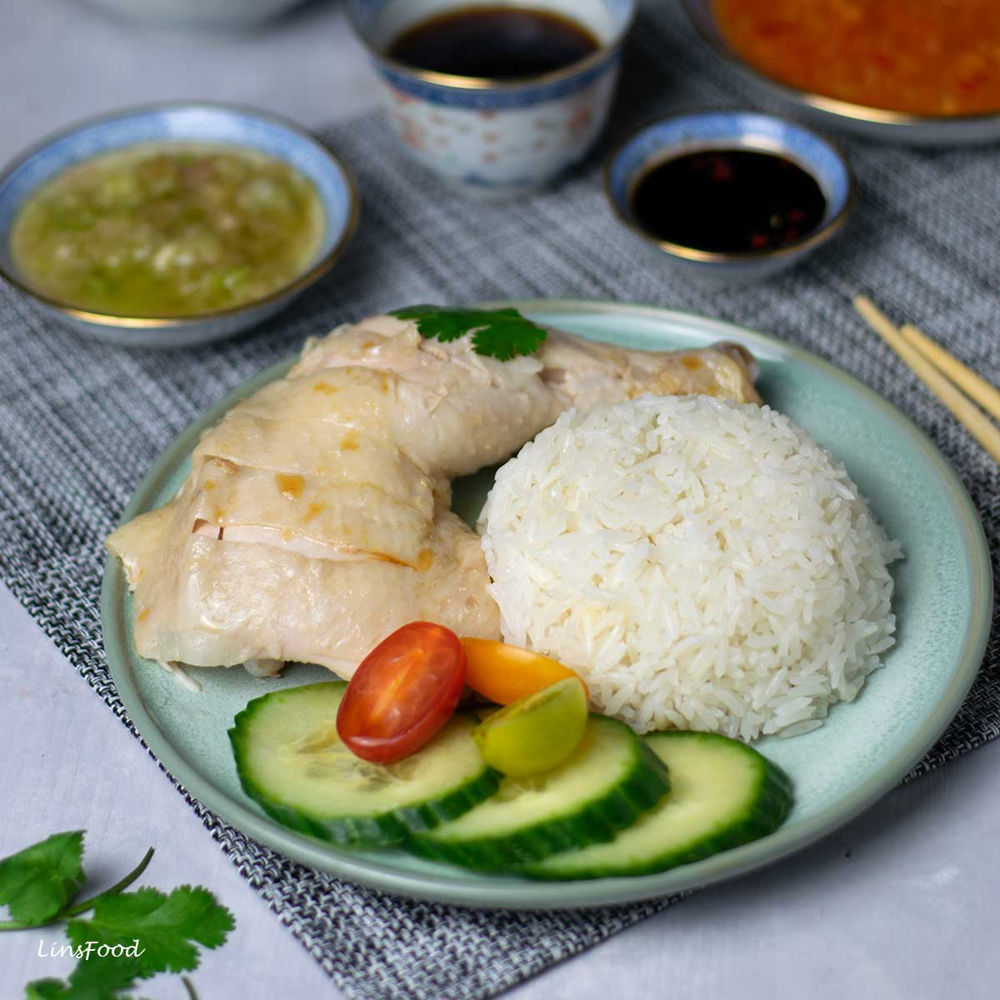

Chicken Rice

Description
Hainan Chicken Rice is a classic dish beloved by people in Singapore and all over Asia. Served room temperature, the chicken is incredibly silky. But the rice is really the star—cooked in the broth from poaching the chicken, served with a trio of condiments.
This recipe takes some work, but it’s worth it!
Ingredients
For the Chicken
- 1 small chicken
- 1 tablespoon salt
- 12-14 cups water
- 4-5 slices ginger
- 2 whole scallions
- Ice
For the Rice
- 2 ounces chicken fat
- 1 tablespoon salt
- 4 cloves garlic
- 3 cups uncooked white rice
- Chicken stock
- 2 teaspoons salt
For the Ginger-Garlic Sauce:
- 4-inch piece ginger
- 2 cloves garlic
- 3 tablespoons neutral oil
- 1 pinch salt
For the Sweet Dark Soy Sauce:
- 1/4 cup water
- 1.25 ounce rock sugar (2 sizable chunks, or substitute 2.5 tbsp granulated sugar)
- 1/4 cup dark soy sauce
For the Chili Sauce:
- 3 fresh red chilies (choose a chili with medium spice level; we used holland chilies)
- 1.5-inch piece ginger
- 2 cloves garlic
- 1/4 teaspoon sesame oil
- 1/2 teaspoon salt
- 1/4 teaspoon sugar
- 1 tablespoon fresh lime juice (1 tbsp/15ml = the juice of 1/2 lime)
- 1/2 teaspoon rice vinegar (or white vinegar)
- 2 tablespoons broth from boiling the chicken (or until a saucy consistency is achieved)
Steps
To make the chicken:
- Wash the chicken clean and remember to set aside the piece of chicken fat from the cavity. Transfer the chicken to a plate and pat dry with a paper towel. Lightly rub the chicken with the salt. This will give the chicken skin a nice sheen. Set it aside.
- Bring the water, along with the ginger and scallions, to a boil in a large stockpot. Carefully lower the chicken into the boiling water, positioning the chicken breast-side up. Now is a good time to adjust the water level so the chicken breast just pokes above the water (so you aren't left with dry white meat).
- Wait for the water to come back up to a boil. Once it does, carefully lift the chicken out of the water to pour out the colder water that is trapped in the cavity. Carefully lower the chicken back into the pot. Bring the water to a boil again. When it is JUST starting to boil again, turn the heat down. Keep it at barely a simmer. There should be very little movement in the water, but it also shouldn't be still. Cover the pot, and keep the heat around the lowest setting so the liquid continues to simmer slowly.
- Cook for about 30-35 minutes, roughly 10-11 minutes per pound. Depending on the size of your chicken, it may take more or less time to cook it through. (If you have a chicken larger than 3 1/2 pounds, it will take more like 40-50 minutes to cook.) You can check to make sure the water is bubbling slowly/gently and not boiling too vigorously, but try to avoid uncovering the pot during cooking.
- When the timer (for the chicken) is almost up, prepare a large ice bath. To check if the chicken is done, stick a toothpick into the thickest part of the thigh until it touches the bone; if the juices run clear, it's cooked through. Carefully lift the chicken out of the pot, drain the water from the cavity and lower it into an ice bath. Take care not to break any skin when lifting out of pot or placing in ice bath. After 15 minutes in an ice bath, drain and cover with clear plastic until ready to cut and serve.
- If you like, you can leave the pot of chicken poaching liquid simmering uncovered (so it reduces and concentrates flavor for cooking the rice in the next step).
To make the rice:
- While the chicken is cooling, make the rice. Heat a wok or large skillet over medium heat. Add the chicken fat, along with 1/2 teaspoon of oil, and cook for 1-2 minutes, or until you have about 1 tablespoon of rendered fat. Stir in the minced garlic and fry briefly, making sure it doesn’t burn. Add the uncooked rice. Stir continuously for about two minutes.
- Turn off the heat. Scoop the rice into your rice cooker (leave the hunk of chicken fat behind or add it to the rice—your choice) and add the stock from poaching the chicken (instead of the usual water) until it reaches the '4' line (3 US cups = 4 rice cooker cups). Stir in the salt. Close the lid and press START.
- If you don’t have a rice cooker, transfer the toasted rice to a medium/large pot. Add 4 cups of chicken stock and the salt, giving it a quick stir. Soak the rice for 20 minutes. Then cover the pot and bring to a boil. Once it boils, immediately turn down the heat to the lowest setting. Let the rice simmer and cook (covered) for 15 minutes, until the liquid has absorbed into the rice, and it is tender.
To make the ginger garlic sauce:
- Grind the ginger and garlic in a food processor until finely minced. Heat the oil in a small pot or saucepan. Gently fry the ginger and garlic until aromatic and just lightly caramelized. You want it to be just cooked so that it no longer has that spicy raw flavor of uncooked ginger and garlic. Add salt to taste and transfer to a sauce dish.
To make the sweet dark soy sauce:
- Heat the water and sugar in a small saucepan over medium heat. Stir constantly until the sugar dissolves and the liquid thickens into a simple syrup. Add the dark soy sauce, stirring to combine. Transfer to a sauce dish.
To make the chili sauce:
- Grind the chilies, ginger, and garlic in a food processor until finely chopped. You will probably have to scrape down the sides of the food processor 1-2 times to ensure everything is ground up evenly. Add the sesame oil, salt, sugar, lime juice, and vinegar to the food processor. Pulse 2-3 times to combine. You can also do this in a mortar and pestle.
- Transfer to a small bowl and add chicken broth (what you used to boil the chicken) 1 tablespoon at a time until a saucy consistency is achieved. This is really about your preference too; if you like a thicker paste, add less broth.
Back to Homepage